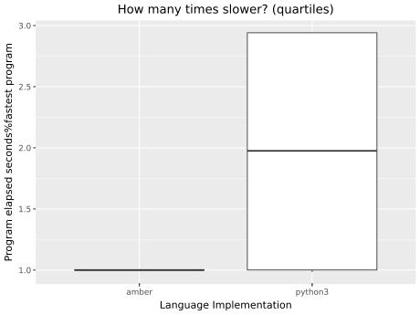

Fastest
contributed programs, grouped by programming language implementation
shamelessly borrowed from The Computer Language Benchmarks Game

| × | source | secs | mem | gz | cpu secs |
|---|---|---|---|---|---|
| 1.00 | collatz.c | 0.0101 | 2,392 | 819 | 0.00877 |
| 17.3 | collatz.amber.k | 0.175 | 24,949 | 1,734 | 0.173 |
| 285. | collatz.growler.k | 2.89 | 3,527 | 464 | 2.88 |
| 460. | collatz.py | 4.66 | 14,963 | 193 | 4.63 |
| 694. | collatz.kap | 7.04 | 218,624 | 166 | 8.02 |
| 1.00 | spectralnorm.py | 2.16 | 29,753 | 678 | 7.35 |
The current round of the benchmarks game. See Round 1 for the last round performance. It's never too late to add your language to this round or previous rounds or to improve any program from any round. A leaderboard will be posted that summarizes all rounds.
See description of spectralnorm. collatz requires the length of the collatz sequence starting at 1+2^x
Please propose interesting new benchmarks -- maybe more from The Computer Language Benchmarks Game.
Please contribute more programs for your favourite array language. Note there is only one rule: don't use libraries other than the c/c++ standard libraries or python's sys, multiprocessing and math. There is no restriction on algorithms, unlike the CLBG.
The benchmark is run on an i5-1135g7 (tiger lake, some avx512) and each process is limited to 2GB of memory